来，认识一下这一章的主角——三角形。
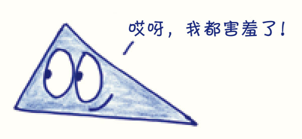
作为一个二维图形，三角形的样子可能不太符合我们通常对主角的期待。但是这位非典型的主角即将踏上一段主流英雄之旅：它出身卑微却非常努力，掌握了内心的力量，最终在危急时刻挺身而出，拯救了全世界。
如果你无法突破思维的惯性和局限，打心眼儿里不能接受我们的主角是一个勇敢的多边形，那么先不要继续往下读了。你就戴着偏见的眼罩吧，别忘了紧紧闭着双眼，这样最深的黑暗就能紧紧地包裹着你，夺目的几何真理的光辉就不会穿透你不愿打开的、禁锢的思想。难道你真的忘了吗？这座城市是我们人类建造的，这座城市是我们人类用三角形建造的呀……跟我一起回去看看吧！
欢迎来到古埃及：在你眼前这个繁荣的帝国，有着阶级分明的统治机构和虔诚坚定的信仰。在其他小国经历朝代更迭、兴亡衰盛的时间里，它将在人类历史中屹立数千年。
走，一块儿溜达看看。现在是公元前2570年，壮观的吉萨大金字塔已经建成一半了。1这座由350万吨的石块搭成的建筑物从沙漠中平地而起，竣工之前还要再搭上300万吨的石块——其中最大的一块石头比两头公象还重。大金字塔的底部是一个正方形，这个正方形底座的边长是230米，和纽约市三个街区的长度差不多。在当时，它已经是世界上最高的建筑了，这个由八万人齐心协力建造的金字塔将在十年后竣工，最终高达147米。人们期望，这座历史上最耐久的摩天大楼，作为三角形结构最伟大的胜利，在五千年后仍然能在此屹立不倒。
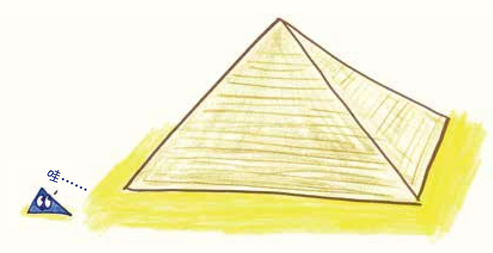
可惜，事与愿违。
别担心，上次我去金字塔的时候，它还好好地立在那儿。我要反对的是把金字塔归为三角形的胜利。三角形在建筑工程中真正的应用并非如此，如果你感兴趣，我们先暂别大金字塔，一起去附近的空地看看。就是这里了，快看，那是古埃及的测量队，队员们手里拿着一圈特殊的绳子，绳子上系了12个等间距的结。2
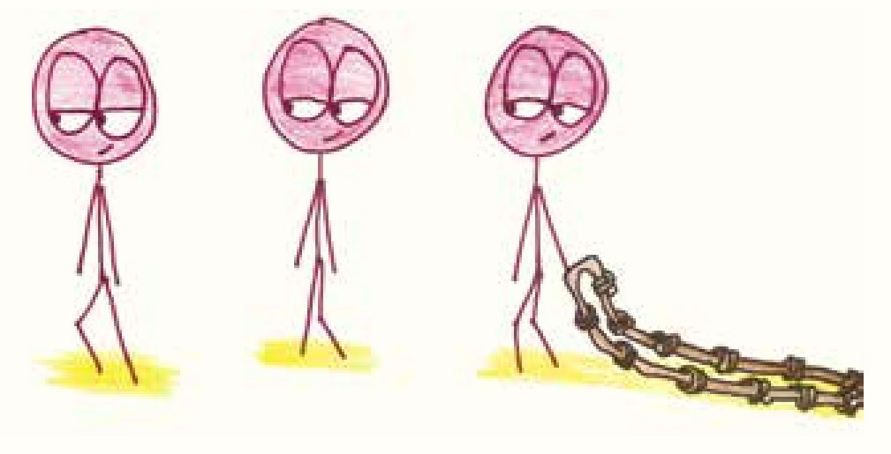
这圈奇怪的绳子是用来干什么的呢？别急，接着瞧。三个测量队员每人抓着绳子上的一个结（分别是1号结、4号结和9号结），各自走了几步，把绳子拉紧。见证奇迹的时候到了，这圈绳子形成了一个直角三角形。待第四个队员根据三角形直角的位置在地上做好记号，三个人放松了手中的绳子，三角形又变回了原来的那一圈软绳。测量队不断重复这个操作过程，直到整个区域被完美地划分成多个大小相等的矩形。
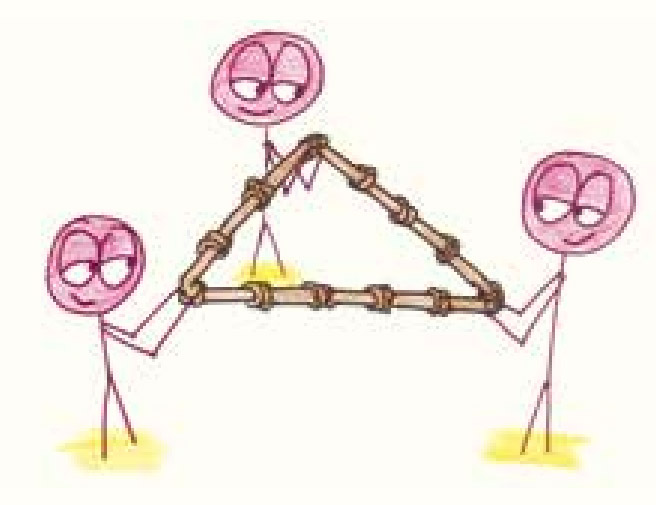
如果你没有在几何课上打瞌睡 （就算打过瞌睡也该知道这个知识点），这个场景可能会让你想起毕达哥拉斯定理（勾股定理）。这个定理证明，如果以直角三角形的三边为边，各画一个正方形，那么两个小正方形的面积之和就等于大正方形的面积。用代数表达式来说，就是a2+b2=c2。
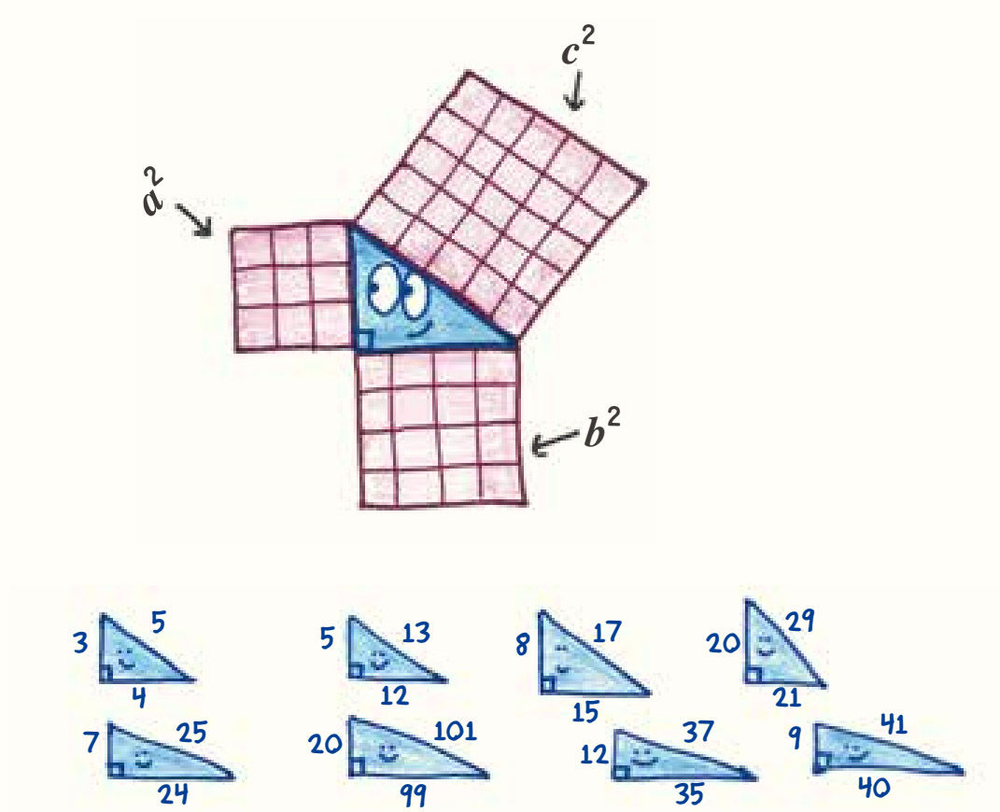
满足这个定理的三角形有无数个。三角形的边长可以是5、12和13，或者7、24和25，或者8、15和17，或者我本人最喜欢的20、99和101。埃及人明智地选了一个最简单的三角形，边长为3、4和5，所以他们手里的绳子一共有12个结。
但这一章的重点不是毕达哥拉斯和“他的”定理（毕竟古埃及人对这个规律的发现远远早在他的证明之前），这一章我们要讲的是三角形更简单、更基本的一个性质，一种我们很快就会发现的低调的优雅。三角形的故事不是从毕达哥拉斯的神坛开始的，也不是从大金字塔的顶端开始的，而是从这样的一片空地开始的。就在这里，一根松弛的绳子可以变成测量工具，这样神奇的力量甚至让金字塔相形见绌。
现在，这个故事进入了主角认识自我的阶段。三角形在对自我的审视中，提出了哲学上的终极问题之一：我是谁？
“我真的就是一个普通的几何图形吗？和四边形、五边形、六边形比起来，除了边和角的数目不同之外，我还有什么不同？”三角形乞求着上天的启示，它想找到自己的个性、梦想和价值。它的内心在呐喊：“我到底是谁？为什么我是三角形而不是其他的多边形？”然后，一个雷鸣般的声音从内心传来。
“我是由三条边组成的，所以我注定是三角形。”
好吧，这也许不像其他电影主角的自我发现那么具有启示性，答案直白得有点儿像正在接受心理治疗的病人注意到自己坐在沙发上——实在是太显而易见了。然而，也许你没有注意到其中隐藏的深意：当我们看到的三角形不是一个整体，而是由三部分组合而成的形状时，新的真理将逐渐浮现。
不是任意三条边都可以构造三角形的。以长度为10厘米、3厘米和2厘米的三条边为例，这三部分只能构成一个带缺口的“三角形”——如果你能勉为其难地称之为三角形的话。因为这个“三角形”的长边太长，而短边又太短。这样的形状，我称它为霸王龙三角形，因为它就像霸王龙一样，胳膊又粗又短，两只前爪没法碰到脚丫。
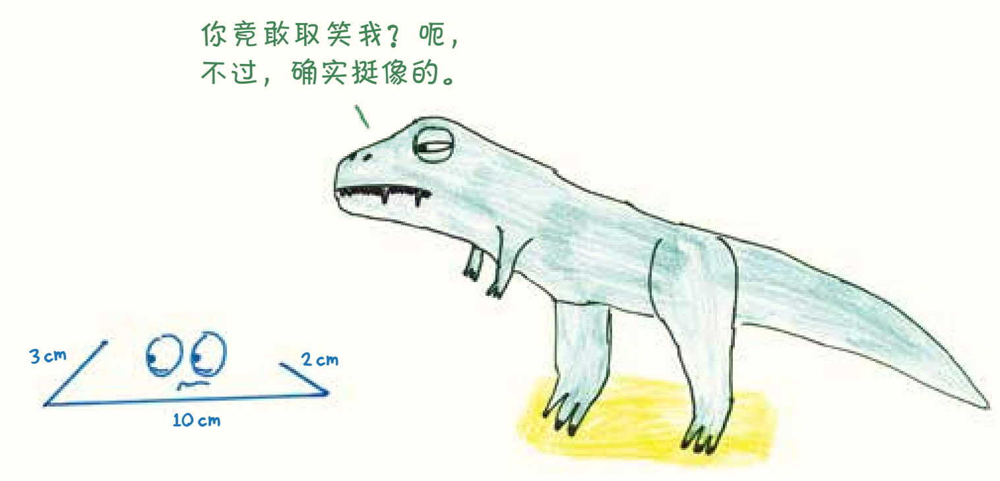
这个真理放之四海而皆准：三角形最长的边必须小于其他两边之和。
就连苍蝇都经常运用这个定理。它知道，当起点和终点一定时，沿着直线飞行（从A到B）比沿折线飞行（从A到C再到B）路程短。如果把这两条路线看作三角形，你就能很明显地看出，两条短边加起来一定比第三条边长。
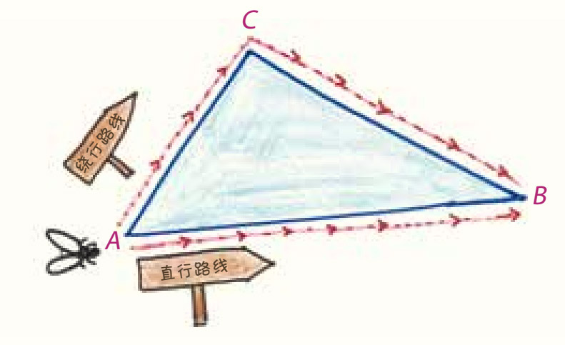
此外，深藏不露的三角形还有一个更强大的性质：满足上一个定理的三条边能且只能构成一个三角形。也就是说，给定三条边的长度时，你完全没有润色或即兴发挥的空间，只能遵循规则，拼出唯一的三角形。
假如有人事先选定了三条边的长度（如5米、6米和7米），然后要我们进入不同的房间，用这三条边在房间里摆出自己的三角形。我保证我们的作品会是一模一样的。
看，我会先把最长的那一边平放在地上，用另外两边的端点分别连接长边的两端，再以长边的两个端点为轴心，将两条短边向中间旋转靠拢，直到它们的顶端相接。完成！这就是那个唯一的三角形，如果你希望有所创新，你会发现，无论将哪个角稍微增大或减小，都会有一条边突出来，破坏整个三角形的形状，使图形不再呈三角形。这就是数学家们所说的三角形的唯一解。即便我无法预料你摆出这个三角形的方法，也知道你最终会得到和我完全相同的三角形——那是唯一的解，没有其他答案。
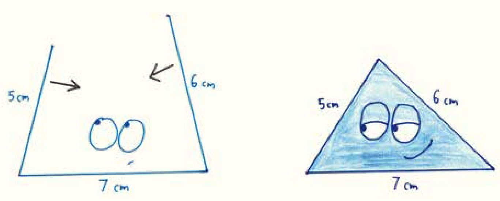
这就是三角形独一无二之处，其他多边形没有这样的定理。
比如说，和三角形最相似的四边形。我先把一条边平放在地上，用另外两条边的端点连着它的两端竖立起来，再把第四条边放在上面，最后用胶带把每个连接点固定好，就成了一个矩形。这时，突然起风了，矩形开始摇晃，原本竖直的两条边顺着风的方向倾斜。整个装置都歪了，看上去就像一把正在叠起来的折叠椅，随着风越来越大，四边形不断变换形状，从“方形”到“近似方形”，到“有点儿像菱形的形状”，再到“超尖的瘦菱形”……
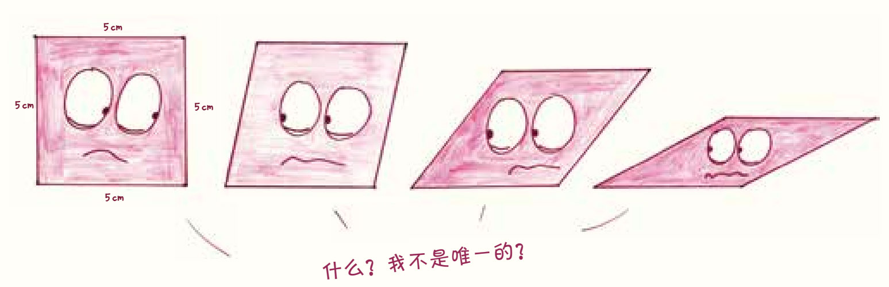
这四条边围起来的时候，并没有形成一个独特的形状，而是提供了无限多种四边形的可能性。只要施加一点儿压力，任何部件都可以重新组合，成为另一个不同的形状。
现在你相信了吧？那是只属于三角形的特点，是它的隐藏技能：三角形的特点不只是它有三条边，还有这三条边所赋予整个结构的刚性。
古埃及的测量员早已洞悉这个技能，通过拉紧手中的12结绳，他们找到了毕达哥拉斯三角形：他们从绳中召唤出了一个直角。你也可以试着用绳子去召唤有四个直角的正方形，但是要小心：四边形的庞大家族中，无数个你不需要的形状都会响应这个召唤。无论你怎么拉紧绳子，它的四条边还是可以不断扭曲、变换形状，因为四边形是无法被固定的。五边形、六边形、七边形和其他所有的多边形都是如此。只有三角形具有刚性。
坚固的金字塔并没有运用三角形这种特殊的力量。立方体、圆锥体、平截头体3——这些形状都能达到法老对金字塔的要求。金字塔是石块堆起来的，笨拙的石块堆起来以后都是坚固的，形状不那么重要。
我没有看轻金字塔的意思。对90亿千克重的大石头堆建筑来说，“轻”当然不合适，而且我非常佩服它惊人的精度：金字塔底座每一边的误差在20厘米之内，各个方向角度的误差低于0.1°，与直角的偏差角小于0.01°。这些古埃及人是懂数学的。
然而，我还是不得不说，这近乎完美的精度不是建筑师的功劳，而是测量员的。从根本上来说，大金字塔仍然是一堆石块。这种一堆石块的设计如果仅是作为法老不朽的象征，那当然没问题，但对于一座对实用性有要求的建筑来说，就不是个好作品了。金字塔里，最狭窄的房间和通道的大小还不到它内部体积的0.1%。想想看，如果帝国大厦内部只有一层60厘米高的空间，别的地方都填满了实心钢结构，你肯定也希望能有一个更加高效实用的替代方案。4
在接下来的几个世纪里，建筑师们将寻求新的建筑结构。他们希望建成能跨过山河湖海的坚固桥梁，能高耸入云的摩天大楼。为达到这些目的，他们需要一种非凡的坚韧形状：三角形，建筑设计中的英雄。
在这里，我们的故事和另一个故事交织了起来——人类建筑的千年传奇。我们先简单回顾一下人类建筑故事的前情提要。
（1）“室外”是不适合人类居住的，没法遮风挡雨，没法储存食物，甚至可能会遇到狗熊。这就是为什么人类希望转移到“室内”。
（2）要创建“室内”，就需要建造一个巨大的空心形状，供人类居住其中。
（3）如果你的形状设计合理、用料无误，那么住在“室内”会非常安全，每部分都稳固牢靠，没有倒塌的风险。这就是所谓的“建筑”。
好了，现在我们可以进入正题了。我要郑重地介绍一下三角形故事中一个重要的配角：梁。如果你是一名建筑工程师，既不愿设计出金字塔那种内部逼仄的巨石建筑，又希望自己的设计尽可能地牢固，那么梁在你的设计中肯定会发挥重要作用。
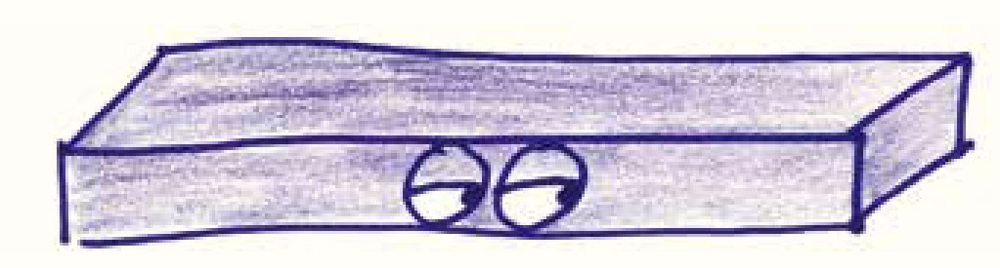
梁可以将竖直方向的力沿着水平方向转移。5例如，当你站在一块搭在沟渠两边的木板上时，你的重量会把木板往下压，但把你支撑起来的力并不来自你的正下方，而是在木板两侧，也就是木板与土地接触的地方。梁也是这样，当在中间受到一个力时，会把这个作用力转移到两侧。
但是梁也存在一个问题：不够高效。
从某种意义上来说，建筑和生活很像，都需要进行压力管理。不同的是，生活中有很多种压力（比如，任务截止日期快到了，要养育孩子了，手机电量不足了，等等），而建筑结构面临的力常常只有两种：推力和拉力。两种力的性质不同，当受力对象被推挤时，推力会产生压力；当受力对象被拉伸时，拉力会产生张力。此外，不同的材料对力的响应差异也很大。比如说，混凝土能承受高压，但在受拉力时非常易碎。另一个极端是钢索，钢索可以承受令人难以置信的张力，但最轻微的压力也能让它们弯曲变形。
现在，想象一根梁在负重的情况下向下弯曲，露出微笑（露出鬼脸可能更贴切些）。猜猜看，它的应变性质是什么：是产生张力还是压力？
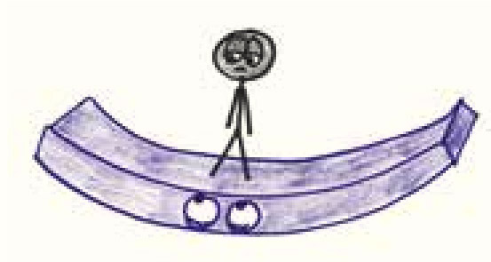
这个问题的答案是“二者皆有”。横梁的上表面就像田径场赛道上的内侧弯道，转弯的地方更短，材料被推挤在一起，产生了压力。再看看横梁底部，这里就像田径场的外侧弯道，距离更长，材料被拉伸，产生了张力。
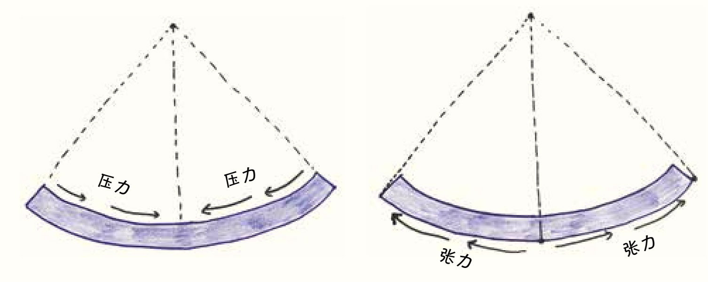
到目前为止，似乎没有什么好让人操心的问题：许多材料在推力和拉力下都表现得还不错，例如木材。然而，现在的问题不在于梁承受了这两种应力，而在于一根梁中的很大一部分并没有承受任何应力。
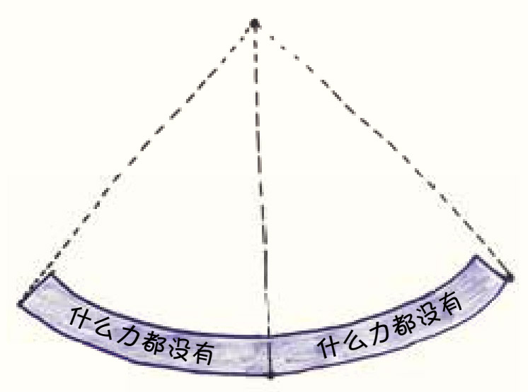
没错，我说的就是中间。梁的中间部分安然地处于被压缩的顶部和被拉伸的底部之间，没有任何应变，中间部分的曲线就像一个袖手旁观的路人事不关己的微笑。中间的材料被浪费了，比起金字塔无用的体积，这并没有好到哪里去。通常在一根梁中，有一半的材料是被浪费的，就像学生只用了50%的努力，在学习中浑水摸鱼。
做老师的人都知道，这当然是不可接受的。而在建筑界，每一克的材料都很重要，不管你是在建造一栋摩天大楼、一座跨越峡谷的大桥，还是一辆保证安全的过山车。
放心，建筑师不是傻瓜6，他们是有办法解决这个问题的。
我说过，建筑师不是傻瓜。不过你听了他们的解决方案以后，我可能还得再说一遍。因为梁的顶部和底部承受了所有的力，而中间的部分是空载的，所以建筑师绝妙的解决方案就是：建造没有中间部分的梁。
好了好了，先别嚷嚷，我知道你们要说什么：没有中间部分的梁就是“两条分开的梁”，这看起来可不是一个很好的解决方案，对吗？
这么说也没错，除非……我们只保留少量的中间部分。我们可以把大部分材料用在梁的两端，中间部分只留下一层比较薄的连接结构，所得形状的截面类似于“工”字。是的，“工字梁”这个术语就是这样产生的。7
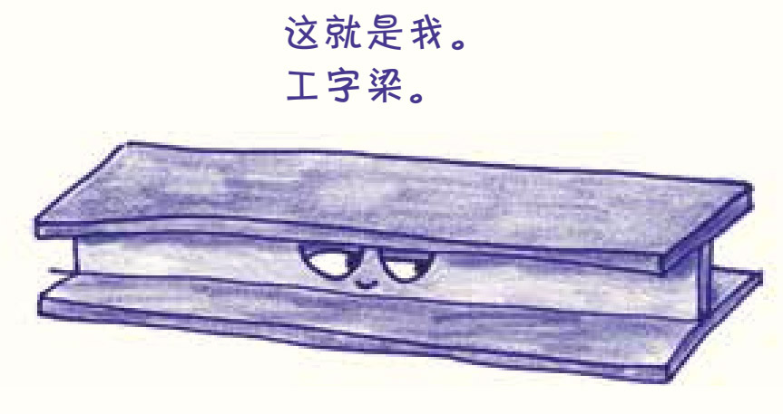
这个头儿开得还不错，但梁的中间部分还是浪费了不少材料。所以我们要启动第二阶段的方案了：在工字梁上打孔。
打孔不是什么费劲的工艺，在几乎没有额外能量消耗的前提下，梁上的每个孔都节省了宝贵的资源。中部的孔洞越多，我们节省得就越多——没错，如果能把工字梁的中部做成布满小孔的网格状，让空心部分比实心部分还多，那就最好了。
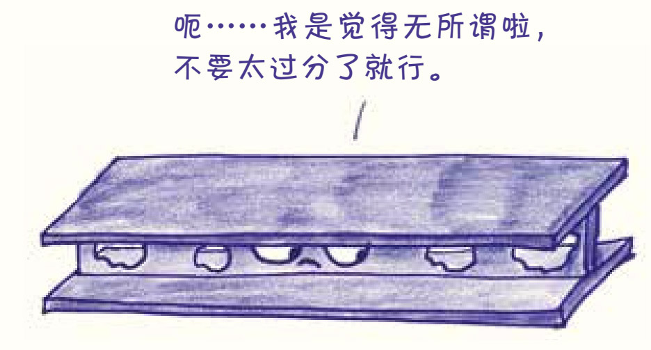
等等，别不管三七二十一就开始钻孔，我们得有计划地做这件事。先好好想想：如果要保持结构的强度和刚性，什么形状的孔可以让我们用最少的材料做出梁？此外，工字梁的中间部分很薄，接近于二维平面结构，我们怎样才能找到适合这种结构的、简便又灵活的改进方案呢？
一般的形状都无法同时满足这些要求。柔弱的正方形被风一吹就会扭曲变形，怯懦的五边形略有压力就会轰然坍塌，六边形那个没骨气的叛徒就更不值一提了。只有多边形中的“超人”才能在张力和压力下不屈不挠。
这个“超人”就是具有刚性结构的三角形。
人们连接起一个个三角形、组成整体的结构单元，桁架（truss，源自法语单词“trusse”）就这样诞生了。桁架的每部分都会受到张力或压力，没有空载的构件，不浪费任何材料，就像一个不浪费猎物每个部位的猎人。
在古埃及，当大家都在关注恢宏的金字塔时，作为测量员的得力助手，三角形在空地上勤恳地劳作。而在几千年后的大洋彼岸，曾经在幕后默默耕耘的三角形成了舞台中央最耀眼的明星。
在19世纪末和20世纪初，北美的人们征服了一片广阔的大陆。由于这片土地崎岖不平，在这里建造城市，从最普通的人行道到横亘千里的铁路都要以桥梁的形式搭建。建桥要用到桁架，那么构建桁架需要什么呢？当然是三角形了。
一对兄弟在1844年设计了普拉特式桁架（Pratt truss）8，这种桁架由一排直角三角形组成，它问世后迅速风靡美国，几十年来一直广受欢迎。
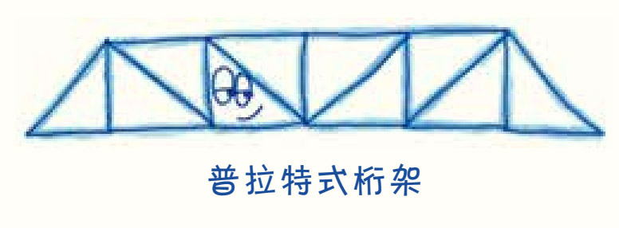
1848年诞生的另一种桁架——华伦式桁架（Warren truss）则是由一排等边三角形组成的。
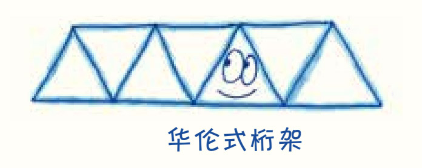
巴尔的摩桁架（Baltimore truss，又称平弦再分桁架）和宾夕法尼亚桁架（Pennsylvania truss，又称折弦再分桁架）都是在普拉特桁架的基础上再嵌套小三角形的变种，在铁路桥梁中很常见。
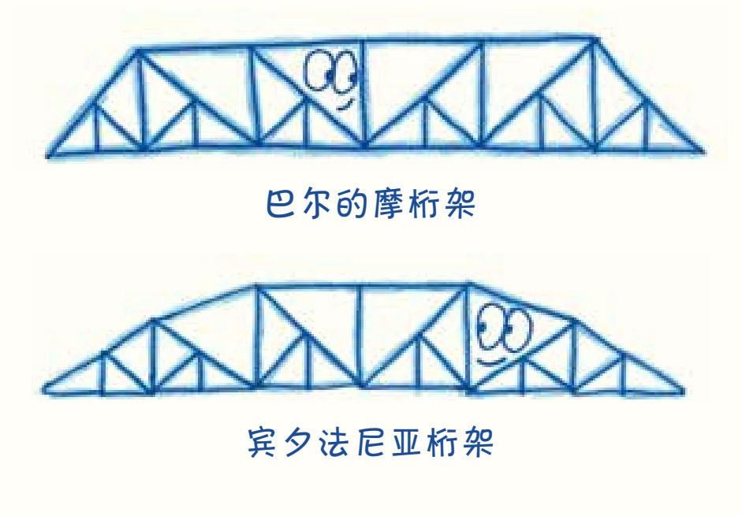
K式桁架组合了各种不同的三角形，看起来就像是很多大小不一的“K”字连成了一排。
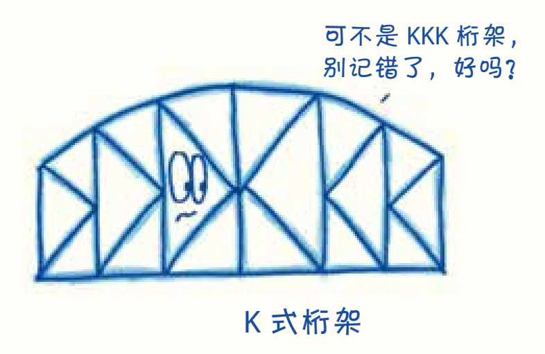
贝雷桁架（Bailey truss）是根据第二次世界大战时的军事需求而设计的。组成贝雷桁架的三角形是标准化、模块化的，可以拆卸、运输和重新组装，能够满足战时不断变化的紧急需求。
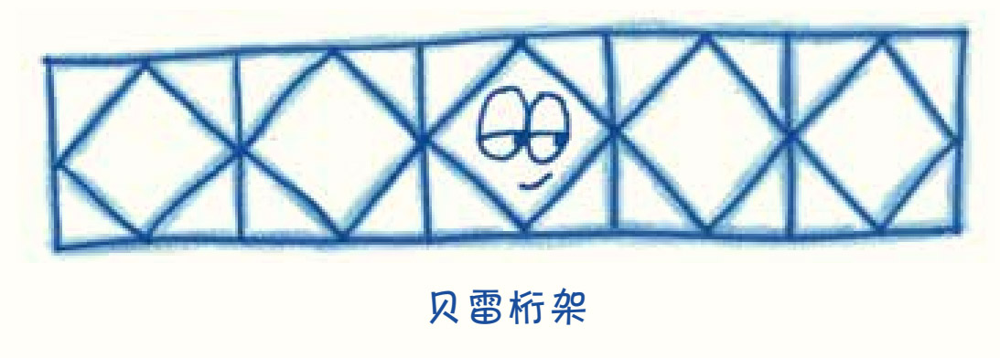
当然，三角形和桁架的应用远不止于桥梁。三角屋顶和高层建筑的骨架中都能见到桁架的身影，连标准的自行车车架都是一个简单的桁架。在现代城市中生活时，我们在三角形下漫步，被三角形托举在半空中，甚至骑着三角形穿行，处处都离不开三角形。
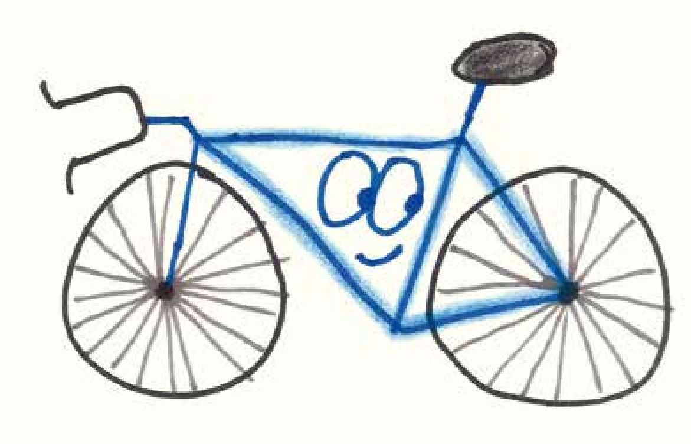
建筑师在设计时是处处受限的：预算、建筑规范、物理规律……无不对他们提出诸多要求。他们最终选择三角形并非出于艺术家或设计师的审美，而是因为没有其他合格的申请者。建筑和三角形的联姻无关爱情，说得好听些，是为了方便，说得难听点，其实是别无他法了。你可能会认为，这样强扭的瓜不会甜，得出的成品一定粗糙丑陋、不堪入目。
然而事实上，它们非常漂亮。这是一个有趣的设计悖论：实用产生美。在实用中也有优雅，尽管最初是迫于无奈地找到了一个正好够用的选择，最后还是带来了视觉上的愉悦。
这也是我从数学中得到的乐趣。一番好的数学论证就像一个设计合理的桁架，应该简洁得正好够用，去掉任意一个基本假设，整个结构就崩溃了。在这种极简主义的优雅中，每一个因素都相互支持，完全没有一丝多余和累赘。
我无法解释有些东西（比如20世纪90年代的流行摇滚乐）为什么那么吸引人，但我知道是什么成就了三角形的英雄故事。它的三条边使它独一无二，它的独一无二使它无坚不摧，它的无坚不摧使它在现代建筑中有了不可或缺的地位。要说三角形“拯救了世界”也许有点儿夸大其词，但如果你问我怎么评价三角形，我得说，它确实让世界更美好了。是三角形让世界变成了现在的样子。